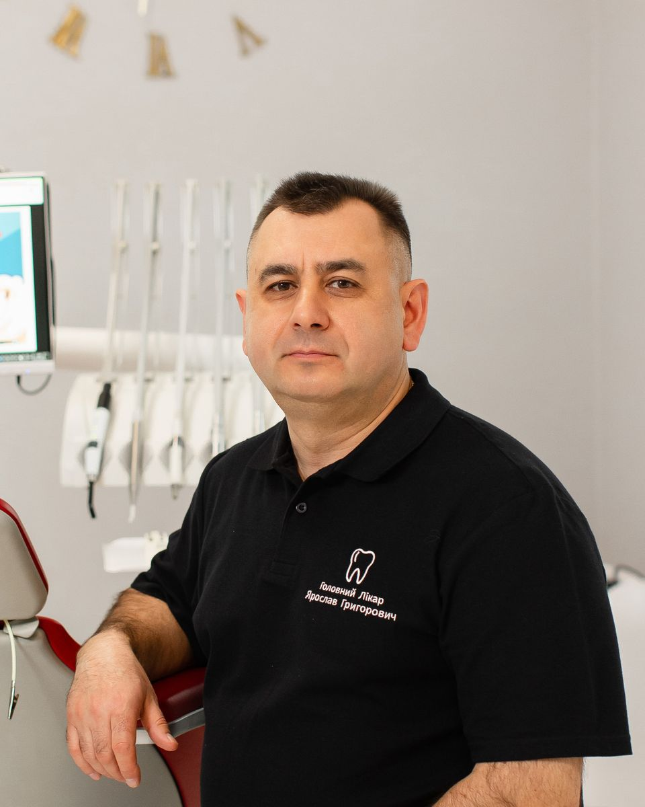
Yaroslav Prydatko
Founder and head doctor
The doctor explains everything in detail, works very carefully and earns complete trust.
The Prydatko family dental clinic in Ternopil since 2008. Adults and children, from a first check-up to implants.
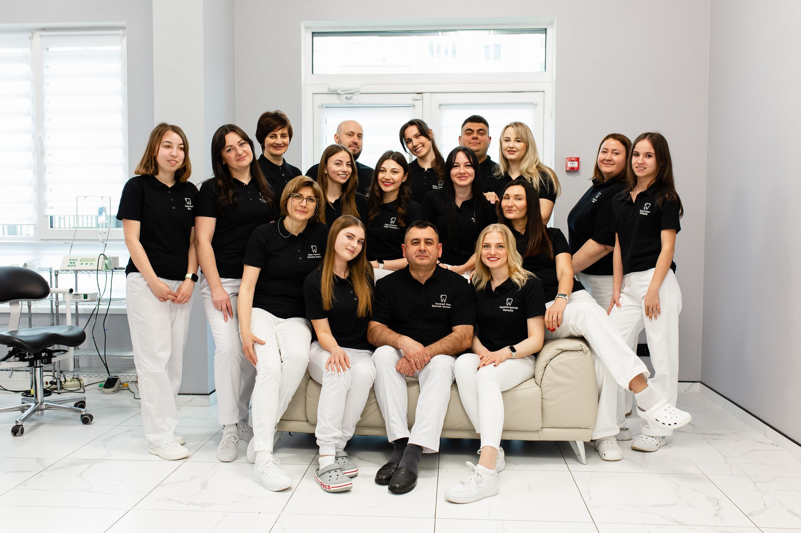
Treatment, aesthetics, orthodontics and implants in one clinic, with doctors who know your history.
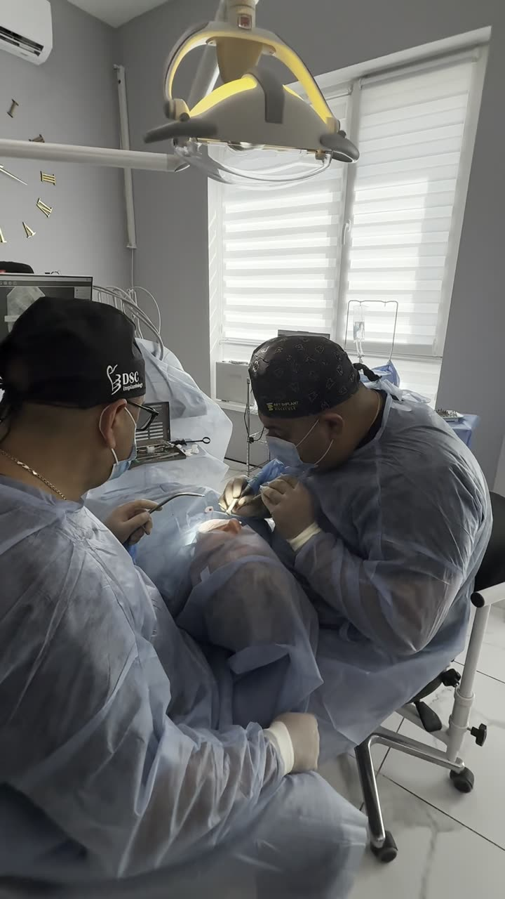
From a single tooth to a full arch on six implants.
Learn moreMagic Smile whitening, veneers, zirconia crowns.
Learn moreCavities, fillings, root canals, rebuilding a broken tooth.
Learn moreBraces and aligners for children and adults.
Learn moreFrom age three, calmly and without fear.
Learn moreProfessional cleaning and gum care.
Learn moreBook a check-up. The doctor will explain what you need and make a treatment plan.
Book a check-upPhotos from our Instagram, before and after treatment.
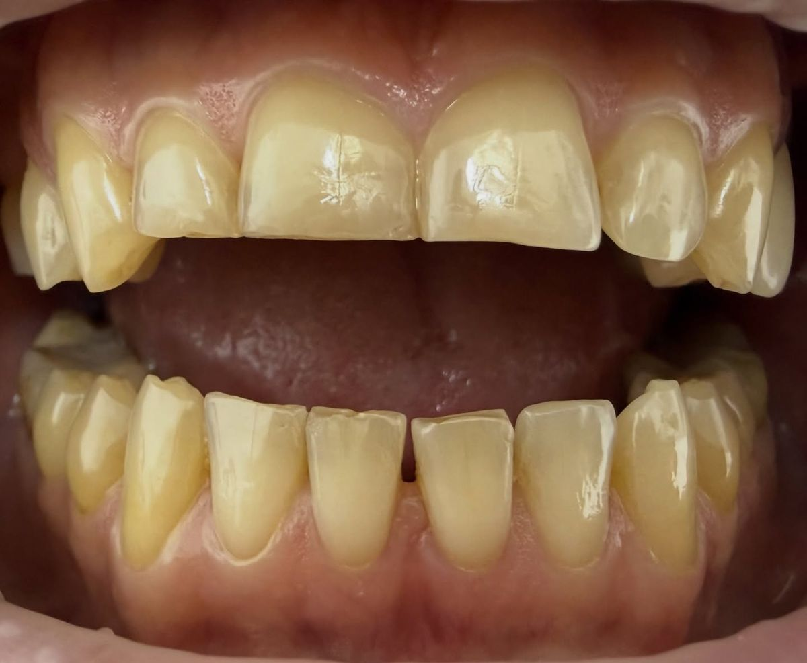
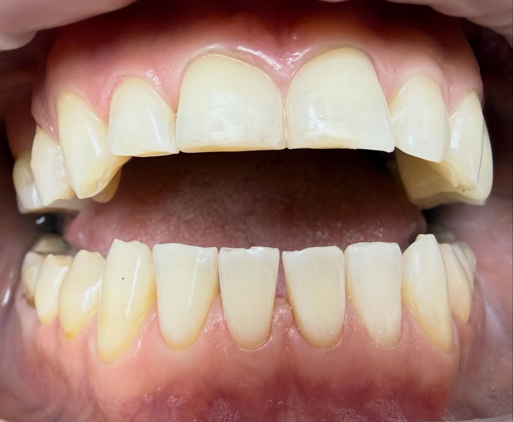
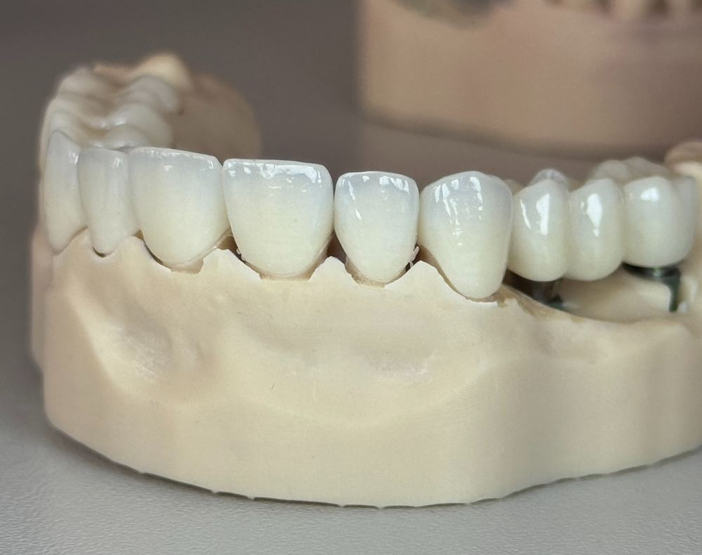
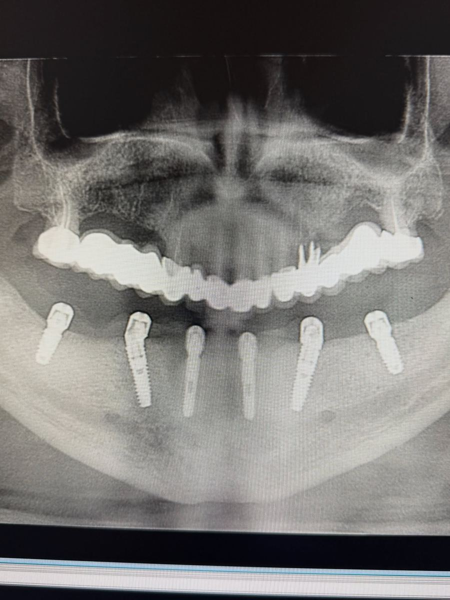
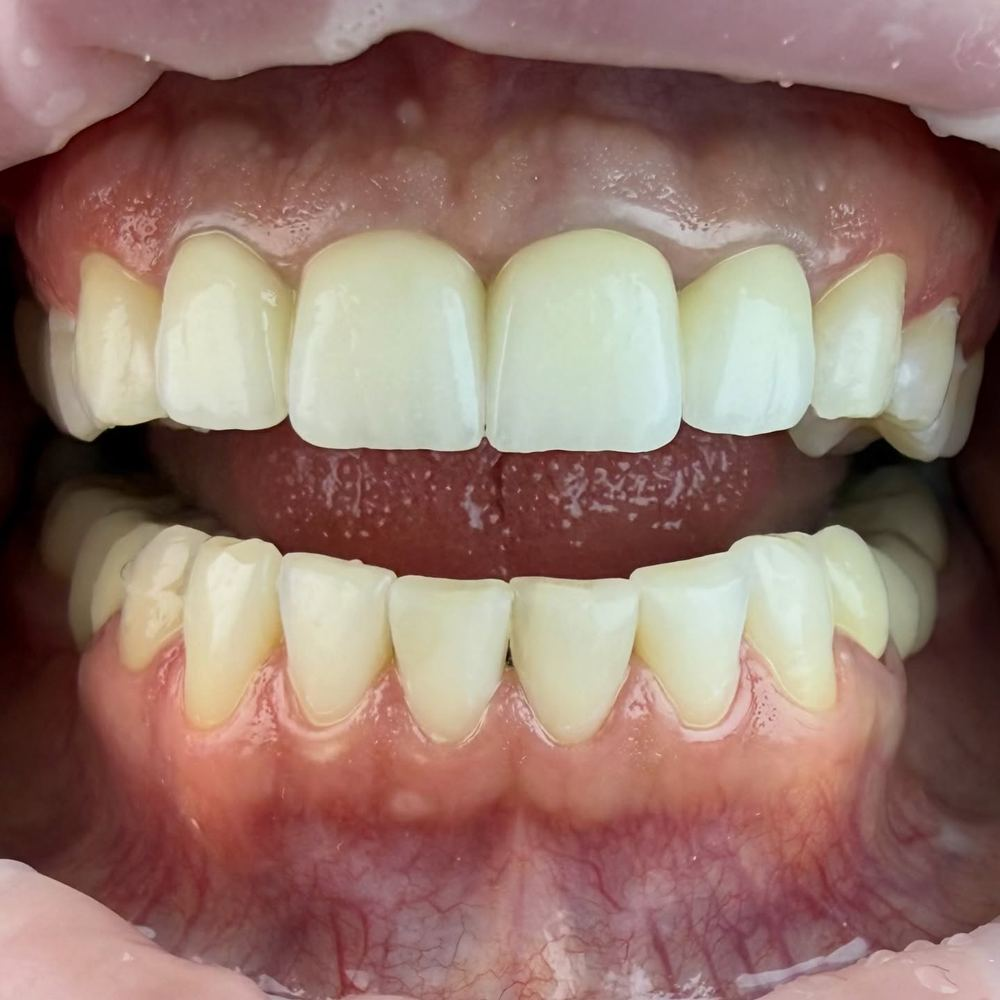
I have been a patient of Dr. Yaroslav Prydatko since the 1990s. For a dentist I will always come back to SLADENT.
Trusted by our whole family for more than a decade. Sincerely recommend.
I liked the convenient hours (they see patients until 8 pm) and that you don't wait weeks for an appointment (1 to 2 days).
Today they treated a tooth for our 4-year-old son. Many thanks to Dr. Sofiia Romanivna and the assistant for the professional work and the good mood!
Our whole family has been coming here for about 10 years. We are happy with everything. The price matches the quality.
The doctor explains everything in detail, works very carefully and earns complete trust.
I had 8 teeth done there, 4 of them without anaesthesia. Afterwards they advised me how to look after my teeth.
As always, professional care, a personal approach and quality work. Our whole family has been coming here for more than 10 years.
I was a little nervous before the implant, but thanks to your experience and well-coordinated work it went calmly and much easier than I expected.
Svitlana Karlivna is a wonderful doctor with great experience, a true professional.
I had my teeth whitened at SlaDent and it went great. The result is excellent.
Professional doctors and friendly staff. Iryna Vasylivna is a wonderful doctor!
I have been coming to Sladent for 5 years and recommend it to my friends and family.
A good clinic. Friendly staff, experienced specialists, a pleasant atmosphere and fair prices.
Reviews translated from Ukrainian.
Dr. Yaroslav Prydatko opened the clinic in 2008. Today Dr. Yurii Prydatko and Dr. Svitlana Prydatko work alongside him.

Founder and head doctor
The doctor explains everything in detail, works very carefully and earns complete trust.
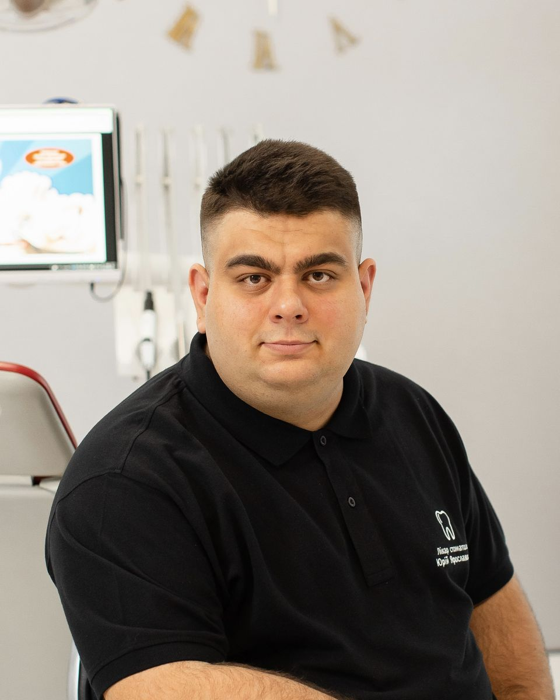
Dentist and implant surgeon
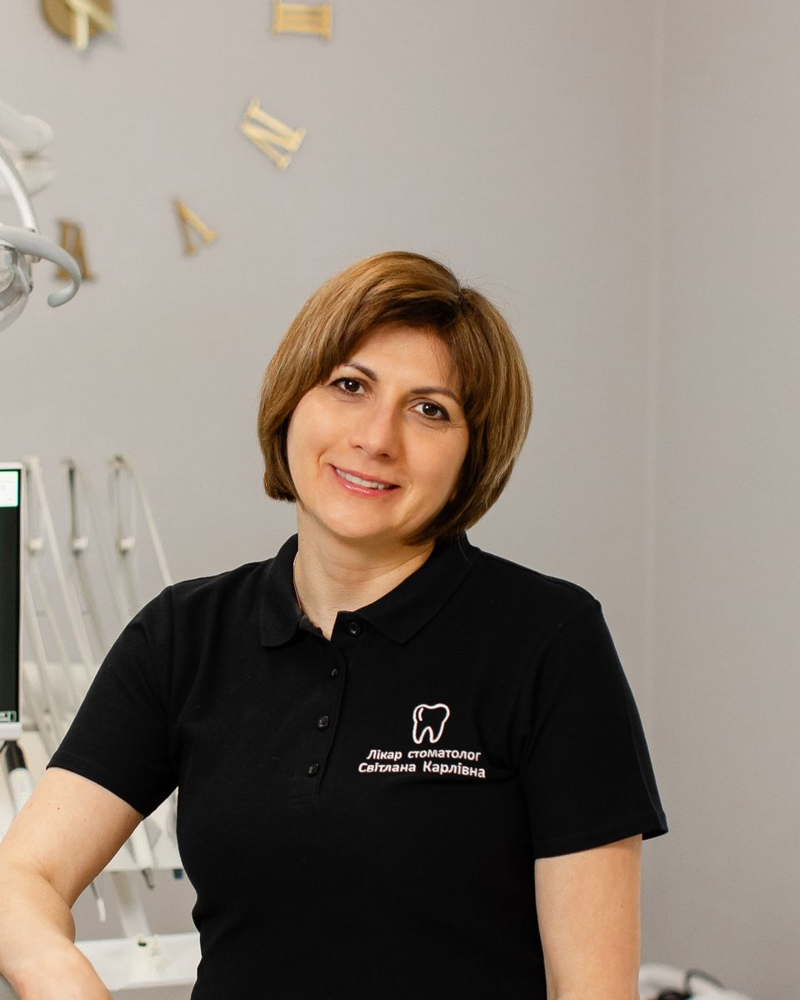
Dentist, also treats children
Svitlana Karlivna is a wonderful doctor with great experience, a true professional.
Also orthodontist Iryna Hlova, Dr. Iryna Vasylivna, Dr. Sofiia Hapii and a team of assistants, nurses and administrators. Meet the team
Doctors, assistants, nurses and administrators. Many patients have come with their whole family for years, so we know them by name.
We treat children from age three. While you wait, your child can play our games or watch a cartoon about Zubyk the tooth visiting the dentist.
Call us or leave a request on the site and our administrator will find a time that suits you.
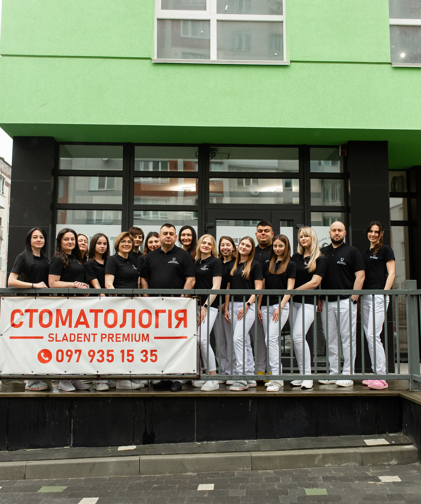
Can’t find the answer? Call us and our administrator will help: +380 97 935 15 35
Yes. Book by phone at +380 97 935 15 35, through the form on this site or at the clinic. The first consultation includes an examination and diagnosis.
Cash, bank cards (Visa, Mastercard) and bank transfer.
A consultation takes 30–45 minutes, a professional cleaning about an hour, implants or prosthetics 1.5 to 3 hours.
Yes, from the age of three. While you wait, your child can play our games or watch a cartoon.
Yes, there is free parking for patients next to the clinic. It is also easy to reach by public transport.
An ID and your medical record if you have one. If you have X-rays or reports from other doctors, bring them too.